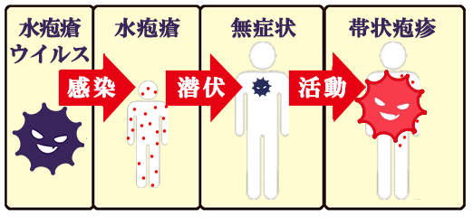

帯状疱疹
帯状疱疹とは
小児が水痘－帯状疱疹ウイルスにはじめて感染し、顕著化すると水痘になります。
このときウイルスは、顕性・不顕性にかかわらず、全身の神経節に潜伏感染の状態になってます。
数十年後、加齢による免疫力の低下や過労をきっかけに再帰感染がおこり、知覚神経に沿って体の片側にまず強い痛み、次いで紅斑、水疱が出現します。

体幹では帯状に体の半周を取り巻く皮疹（水疱）を形成することが多いので、帯状疱疹と呼ばれます。
3週間ほどで自然に治りますが、帯状疱疹後神経痛という痛みを残す場合や合併症を起こすことがあります。
症状
皮膚の違和感やかゆみ、しびれ、痛み
体の左右どちらかに生じる痛みやかゆみを伴う発疹
帯状に現れる水ぶくれを伴う赤い発疹
発症しやすい部位
胸から背中にかけて（上半身）が最も多くみられ、次いで顔（特に目の周り）、首、腕、腹部、腰、お尻、足など全身のどこでも発症します。
治療について
帯状疱疹後神経痛は、症状や程度が患者さんによって違うため、決まった治療法はありません。
発疹や水ぶくれは治療を行わなくても治る場合もあります。
痛みは薬物療法や神経ブロック、理学療法でかなり軽減されます。
帯状疱疹は頭部から顔面に症状が現れることもあり、目の症状として角膜炎や結膜炎、ぶどう膜炎などの合併症を引き起こすことがあります。
帯状疱疹はさまざまな合併症を引き起こすことが知られていますが、できるだけ早く治療を行うことによって予後を改善できる合併症もありますので、早めの受診が大切です。
日常生活での注意点
50歳以上の方は、帯状疱疹ワクチン接種で予防できます
バランスのとれた食事や充分な睡眠など、日頃から体調管理を心がける